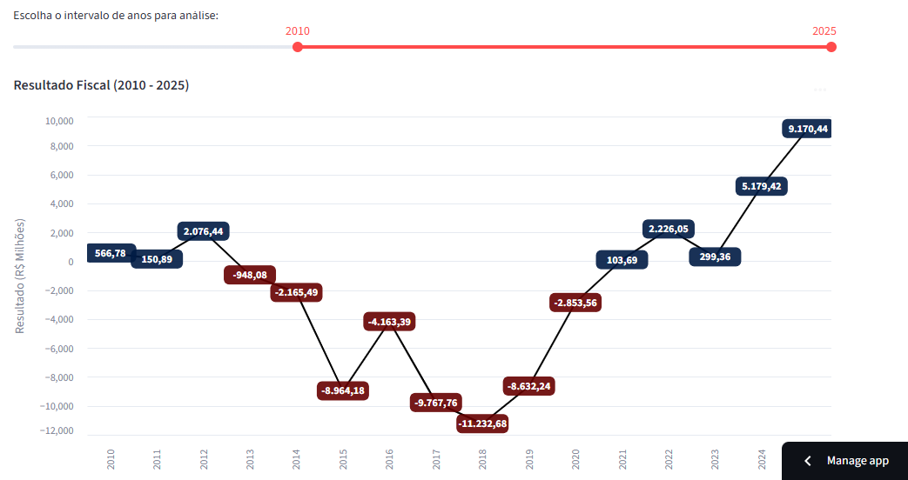
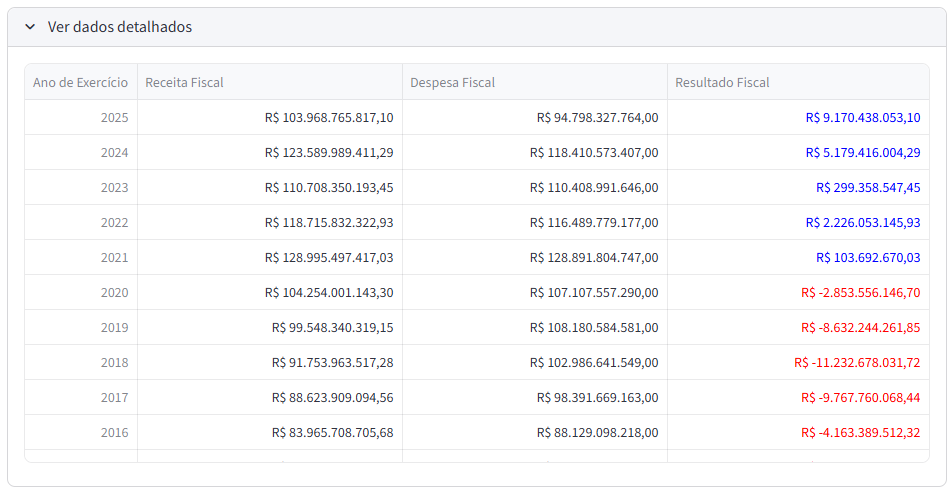
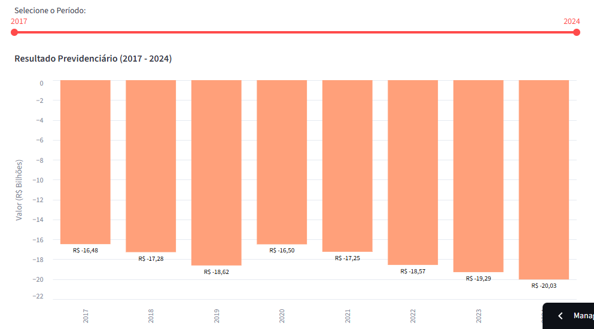
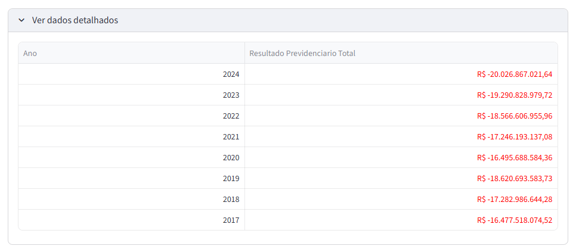

Scripts das Páginas de Indicadores
Esta seção detalha os scripts localizados na pasta dashboard/pages/. Cada arquivo corresponde a uma página específica no dashboard e utiliza os scripts gerais para buscar dados e construir as visualizações.
1. Resultado Fiscal (dashboard/pages/resultado_fiscal.py)
Este script constrói a página do indicador de resultado fiscal, consumindo os serviços de data_loader e utils para criar uma visualização interativa e uma tabela detalhada.


# dashboard/pages/1_Resultado_Fiscal.py
import streamlit as st
import pandas as pd
import altair as alt
# Importa as funções "gerais" que criamos
from data_loader import carregar_dados_fiscal
from utils import formatar_brl, style_resultado_fiscal, format_brl_bilhoes
# --- Título da Página ---
st.title("Resultado Fiscal")
# --- Carregar dados (agora vem do módulo) ---
df_completo = carregar_dados_fiscal()
if df_completo is None or df_completo.empty:
st.error("Não foi possível carregar os dados. Verifique os logs no console.")
st.stop()
# --- Lógica da Página (Filtros e Gráficos) ---
try:
ano_min = int(df_completo['Ano de Exercício'].min())
ano_max = int(df_completo['Ano de Exercício'].max())
anos_selecionados = st.slider(
"Escolha o intervalo de anos para análise:",
min_value=ano_min,
max_value=ano_max,
value=(2014, ano_max), # Valor padrão
step=1,
key='slider_fiscal'
)
except Exception as e:
st.error(f"Erro ao configurar o filtro de anos: {e}")
st.stop()
# Filtra os dados pelo período selecionado
df_plot = df_completo[
(df_completo['Ano de Exercício'] >= anos_selecionados) &
(df_completo['Ano de Exercício'] <= anos_selecionados[1])
].copy()
if df_plot.empty:
st.warning("Nenhum dado disponível para o período selecionado.")
st.stop()
# --- Preparação dos dados para o gráfico ---
df_plot = df_plot / 1_000_000
df_plot['label_offset'] = df_plot.apply(
lambda x: -15 if x > 0 else 15)
# Reutiliza a função de formatação do utils.py
df_plot['label_texto'] = (df_plot /
# Exemplo se quisesse Bilhões
1000).apply(format_brl_bilhoes)
df_plot['label_texto'] = df_plot.apply(
lambda x: f"{x:,.2f}".replace(",", "temp").replace(".", ",").replace("temp", "."))
df_plot['cor_fundo'] = df_plot.apply(
lambda x: '#001B44' if x > 0 else '#660000')
df_plot['Métrica'] = 'Resultado Fiscal'
# --- Gráfico ---
base_chart = alt.Chart(df_plot).encode(
x=alt.X('Ano de Exercício:O', axis=alt.Axis(
format='d', title='Ano de Exercício')),
tooltip=
)
line_e_points = base_chart.mark_line(color='black', point=True).encode(
y=alt.Y('Resultado (Milhões):Q', axis=alt.Axis(
title='Resultado (R$ Milhões)'))
)
label_background = base_chart.mark_rect(
height=22, width=60, cornerRadius=6, opacity=0.9
).encode(
y=alt.Y('Resultado (Milhões):Q'),
yOffset=alt.Y('label_offset:Q'),
color=alt.Color('cor_fundo:N', scale=None)
)
text_labels = base_chart.mark_text(
align='center', baseline='middle', fontSize=12,
color='white', fontWeight='bold'
).encode(
y=alt.Y('Resultado (Milhões):Q'),
text=alt.Text('label_texto:N'),
yOffset=alt.Y('label_offset:Q')
)
final_chart = alt.layer(line_e_points, label_background, text_labels).properties(
title=f"Resultado Fiscal ({anos_selecionados} - {anos_selecionados[1]})",
height=500
).interactive()
st.altair_chart(final_chart, use_container_width=True)
# --- Tabela detalhada ---
df_tabela = df_plot].set_index('Ano de Exercício')
df_tabela = df_tabela.sort_index(ascending=False)
with st.expander("Ver dados detalhados"):
st.dataframe(
df_tabela.style
# Usa a função do utils.py
.map(style_resultado_fiscal, subset=)
.format(formatar_brl), # Usa a função do utils.py
width='stretch' # <-- CORRIGIDO
)
Clique aqui para ver a explicação para cada linha de código
- Fluxo da Página: A página segue um fluxo lógico claro: carregar dados, validar os dados, apresentar um filtro (
st.slider), filtrar o DataFrame com base na seleção do utilizador, preparar os dados para visualização, construir e renderizar um gráfico complexo, e finalmente, apresentar uma tabela detalhada dentro de umst.expander. - Visualização Avançada: O gráfico não é uma simples linha. É uma composição de múltiplas camadas do Altair (
alt.layer): - line_e_points: A linha principal com pontos nos marcadores.
- label_background: Retângulos coloridos que servem de fundo para os rótulos de texto. A cor é definida condicionalmente com base no valor ser positivo ou negativo.
- text_labels: O texto formatado do valor, posicionado sobre o fundo. Esta abordagem cria uma visualização rica em informações e esteticamente agradável.
- Tabela Estilizada: O uso de
st.expanderpermite ocultar a tabela detalhada por defeito, mantendo a interface limpa. O encadeamento .style.map(...).format(...)demonstra o poder do Styler do Pandas:.map()aplica a função de estilo condicional (style_resultado_fiscal) para colorir o texto, enquanto.format()aplica a função de formatação de moeda (formatar_brl) para exibir os números de forma legível.
2. Resultado Previdenciário (dashboard/pages/resultado_previdenciario.py)
Este script segue um padrão semelhante ao da página fiscal, mas adaptado para um gráfico de barras e dados previdenciários.


# dashboard/pages/2_Resultado_Previdenciario.py
import streamlit as st
import pandas as pd
import altair as alt
# Importa as funções "gerais" que criamos
from data_loader import carregar_dados_previdenciario
from utils import format_brl_bilhoes, formatar_brl, style_negativo
# --- Título da Página ---
st.title("Resultado Previdenciário")
# --- Carregar Dados ---
df_previdenciario = carregar_dados_previdenciario()
if df_previdenciario.empty:
st.error("Não foi possível carregar os dados. Verifique a mensagem de erro acima.")
st.stop()
# --- Lógica da Página (Filtros e Gráficos) ---
try:
ano_min = int(df_previdenciario['Ano'].min())
ano_max = int(df_previdenciario['Ano'].max())
except ValueError:
st.error("Não foi possível determinar o intervalo de anos. Verifique os dados.")
st.stop()
anos_selecionados = st.slider(
'Selecione o Período:',
min_value=ano_min,
max_value=ano_max,
value=(ano_min, ano_max),
key='slider_previdenciario'
)
# --- Filtrar Dados ---
mask = (
(df_previdenciario['Ano'] >= anos_selecionados) &
(df_previdenciario['Ano'] <= anos_selecionados[1])
)
df_plot = df_previdenciario[mask].copy()
if df_plot.empty:
st.warning("Nenhum dado disponível para o período selecionado.")
st.stop()
# --- Preparação dos dados para o gráfico ---
df_plot = df_plot['Valor'] / 1_000_000_000
# Usa a função do utils.py
df_plot['Label_Valor'] = df_plot.apply(format_brl_bilhoes)
# --- Gráfico ---
bars = alt.Chart(df_plot).mark_bar().encode(
x=alt.X('Ano:O', title='Ano'),
y=alt.Y('Valor_Bilhoes:Q', title='Valor (R$ Bilhões)'),
color=alt.condition(
alt.datum.Valor_Bilhoes > 0,
alt.value('#001B44'),
alt.value('#FFA07A')
),
tooltip=
)
text_labels = alt.Chart(df_plot).mark_text(
align='center', baseline='top', dy=5
).encode(
x=alt.X('Ano:O'),
y=alt.Y('Valor_Bilhoes:Q'),
text=alt.Text('Label_Valor:N'),
color=alt.value('black')
)
chart = (bars + text_labels).properties(
title=f"Resultado Previdenciário ({anos_selecionados} - {anos_selecionados[1]})",
height=500
).interactive()
st.altair_chart(chart, use_container_width=True)
# --- Tabela detalhada ---
with st.expander("Ver dados detalhados"):
df_tabela = df_plot[['Ano', 'Valor']].copy()
df_tabela.rename(
columns={'Valor': 'Resultado Previdenciario Total'}, inplace=True)
df_tabela = df_tabela.sort_values(by='Ano', ascending=False)
st.dataframe(
df_tabela.style
# Usa a função do utils.py
# <-- CORRIGIDO
.map(style_negativo, subset=)
.format({
'Resultado Previdenciario Total': formatar_brl # Usa a função do utils.py
}),
hide_index=True,
width='stretch' # <-- CORRIGIDO
)
Clique aqui para ver a explicação para cada linha de código
- Consistência Arquitetural: Este script reforça a validade da arquitetura. Ele segue o mesmo padrão da página fiscal (carregar, filtrar, visualizar, detalhar), demonstrando como o design é facilmente replicável para novos indicadores.
- Gráfico de Barras com Rótulos: O gráfico é construído sobrepondo uma camada de texto (text_labels) a uma camada de barras (bars). O operador + no Altair é um atalho para alt.layer. A cor das barras é definida dinamicamente usando alt.condition, uma forma poderosa de aplicar lógica condicional diretamente na especificação do gráfico.
- Tabela Estilizada (Variação): A tabela detalhada utiliza a função style_negativo para colorir os valores e formatar_brl para formatá-los. A sintaxe .format({...}) permite aplicar diferentes funções de formatação a colunas específicas, oferecendo grande flexibilidade.